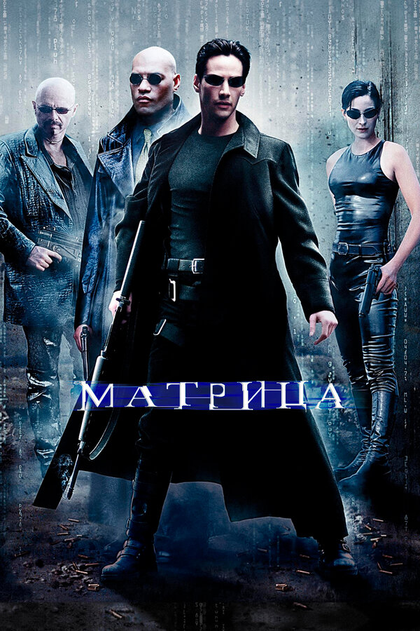
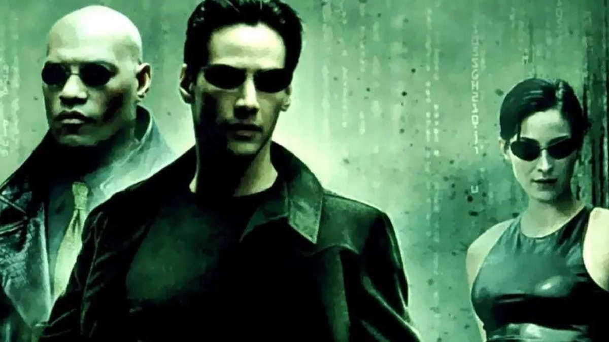

 
Один из самых известных фильмов про виртуальную реальность-матрица,про него я и расскажу подробнее. «Матрица» (англ. The Matrix) — американско-австралийский научно-фантастический боевик, снятый братьями Вачовски. В фильме участвовали Киану Ривз, Лоуренс Фишборн, Керри-Энн Мосс и Хьюго УивингПерейти к разделу «#В ролях». Фильм вышел на экраны США 31 марта 1999 года и положил начало трилогии фильмов, а также комиксам, компьютерным играм и аниме по мотивамПерейти к разделу «#Последователи «Матрицы»». Фильм изображает будущее, в котором реальность, существующая для большинства людей, есть в действительности симуляция типа «мозг в колбе», созданная разумными машинами, чтобы подчинить и усмирить человеческое население, в то время как тепло и электрическая активность их тел используются машинами в качестве источника энергии. Узнав об этом, хакер по кличке Нео оказывается втянут в повстанческую борьбу против машин, в которую также вовлечены другие люди, освободившиеся из «мира снов» и выбравшиеся в реальность.Картина вызвала значительный резонанс в сфере философской мысли, обсуждению её аллегорического смысла посвящены многочисленные статьи. Наиболее полное соответствие идее «Матрицы» находят в платоновском мифе о Пещере; кроме того, в фильме содержится целый ряд философских, религиозных и художественных реминисценций. Среди возможных источников вдохновения для создания фильма также называются гностицизм, киберпанк и хакерская субкультура, «Алиса в Стране чудес», повесть Айзека Азимова «Профессия», роман Артура Кларка «Город и звёзды», гонконгские боевики и аниме.После его просмоотра,вы точно захотите посмотреть фильмы про виртуальную реальность